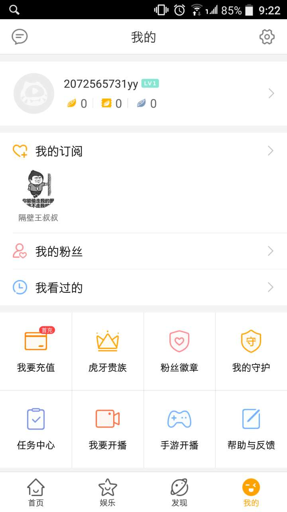

Next: linux kernel maintainer 虎牙直播, Up: (dir) [Contents]
This manual is for program, version version.
| • linux kernel maintainer 虎牙直播: |
作者: zhi.a.wang@intel.com
整理: 周文嘉
| • Abstract: | ||
| • Description: | ||
| • App tutoiral: | ||
| • Related topic: | ||
| • GVT-g : |
Next: Description, Up: linux kernel maintainer 虎牙直播 [Contents]
Date: About , 16:00, 8/6 2017, Sunday。
本次直播已结束，谢谢关注。
希望参与或者持续关注此项目，请移步: Intel GVT-g project
Address: 王叔叔直播间
Content: How to commit your first linux kernel patch
Next: App tutoiral, Previous: Abstract, Up: linux kernel maintainer 虎牙直播 [Contents]
近期将会有 Intel 工程师， linux kernel GVT-g 作者， 以个人名义，在YY平台做一个直播。
和广大工程师一起做技术交流，内容会涵盖如何向 GVT-g 提交patch。 渴望对linux kenrel做贡献的同学，可以关注直播时间。
Ft2 team 将会把这些内容作为一个topic，整理、讨论，并且不定期在网站update。
Next: Related topic, Previous: Description, Up: linux kernel maintainer 虎牙直播 [Contents]
以下是针对手机并且需要下载app的朋友的一个简单入门教程。 以下步骤，都是在手机上操作。
==> 1. 打开王叔叔直播空间页面: http://m.huya.com/1873077328
记住王叔叔直播间的网名 "隔壁王叔叔" 以及左边的 Icon 图标，后面会用到。
点击右下角的 “打开APP”, 将会开始下载“虎牙直播” APP。
==> 2. App安装完成打开后，注册帐号。
==> 3. 从搜索栏搜索 "隔壁王叔叔"， 打开你刚才记住的那个用户，点击“订阅”
==> 4. 此后从 “我的” -> “我的订阅” 将会看到隔壁王叔叔了。
最后的效果图，如下。
Next: GVT-g, Previous: App tutoiral, Up: linux kernel maintainer 虎牙直播 [Contents]
宋老师作品 怎么给Linux mainline发patch
A patch example: example
Previous: Related topic, Up: linux kernel maintainer 虎牙直播 [Contents]
Ubuntu16.10: ubuntu 16.10 download address
GVT-g document
HOW TO CONTRIBUTE TO GVT-G PROJECT
GVT-G NEW ARCHITECTURE INTRODUCTION–UPDATE
GVTg Setup Guide
https://github.com/01org/gvt-linux/wiki/GVTg_Setup_Guide